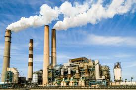

Industri 3.0 terjadi pada tahun 1970-an dan bertanggung jawab atas otomatisasi di pabrik-pabrik. Artinya, menggantikan pekerjaan manusia dengan mesin, program, dan algoritme cerdas yang melakukan sebagian pekerjaan, membuatnya lebih cepat dan efisien.
Era ini menandai transformasi dari sistem mekanis dan analog ke operasi digital dan otomatis di dalam pabrik dan industri yang lebih luas.
Muncul dari mekanisasi dan produksi massal yang menjadi ciri khas Industri 2.0, Industri 3.0 mulai terbentuk pada akhir abad ke-20. Adopsi elektronik dan teknologi informasi menyebabkan perubahan revolusioner dalam cara pabrik beroperasi. Otomatisasi mulai menggantikan tenaga kerja manual dalam banyak tugas yang berulang, dan integrasi sistem robotik mulai menawarkan kemungkinan baru untuk efisiensi dan presisi.
Faktor-faktor yang memicu lahirnya industri 3.0 adalah:
- Kemajuan Teknologi Komputer dan Elektronik: Penemuan dan perkembangan komputer pribadi, mikroprosesor, dan perangkat keras elektronik lainnya memungkinkan otomatisasi proses produksi, pengolahan data, dan komunikasi yang lebih efisien.
- Internet dan Jaringan Komunikasi Global: Adanya internet sebagai sarana komunikasi global mengubah cara perusahaan beroperasi, berbagi informasi, serta mempercepat aliran informasi secara global. Ini membuka peluang bagi sistem produksi dan manajemen yang lebih canggih dan terintegrasi.
- Automatisasi dan Robotika: Kemajuan dalam teknologi otomatisasi dan robotika memungkinkan penggantian tenaga manusia dalam banyak proses produksi, meningkatkan efisiensi dan mengurangi biaya produksi.
- Kemajuan dalam Teknologi Informasi (TI): Kemajuan perangkat lunak, sistem manajemen basis data, dan aplikasi TI mendukung pengelolaan informasi yang lebih baik, serta mempercepat proses pengambilan keputusan.